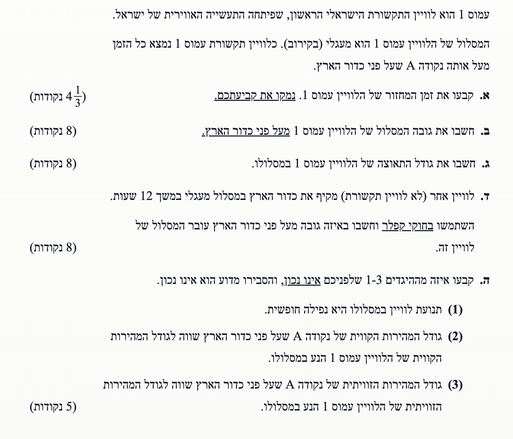

פתרון בגרות בפיזיקה
מכניקה 2011, שאלה 5
פתרון מלא, מוסבר צעד-אחר-צעד הכולל תרשימי כוחות.
עודכן:
--- --:--:--

[תמונת השאלה המקורית]
לא נמצאה תמונה בשם question-image.png באותה תיקייה.
נתוני עזר מדף הנוסחאות
לפני שנתחיל לפתור, נרכז את הנתונים הקבועים מדף הנוסחאות הנדרשים לפתרון בעיות כבידה הקשורות לכדור הארץ:
- קבוע הגרביטציה העולמי: \( G = 6.67 \cdot 10^{-11} \, \frac{\text{N}\cdot\text{m}^2}{\text{kg}^2} \)
- מסת כדור הארץ: \( M_E = 5.97 \cdot 10^{24} \, \text{kg} \)
- רדיוס כדור הארץ: \( R_E = 6.38 \cdot 10^6 \, \text{m} \)
מה נתון: נתון כי הלוויין "עמוס 1" הוא לוויין תקשורת הנמצא כל הזמן מעל אותה נקודה \( A \) שעל פני כדור הארץ. המסלול שלו הוא מעגלי.
מה מחפשים: עלינו לקבוע את זמן המחזור \( T_1 \) של הלוויין עמוס 1 ולנמק את קביעתנו.
נוסחאות ועקרונות בשימוש:
עקרונות קינמטיקה של תנועה מעגלית.
הצבה ופתרון:
כדי שלוויין יימצא כל הזמן בדיוק מעל אותה נקודה על פני כדור הארץ, הוא חייב להסתובב יחד עם כדור הארץ באותו קצב בדיוק. המשמעות היא שהמהירות הזוויתית של הלוויין שווה למהירות הזוויתית של סיבוב כדור הארץ סביב צירו העצמי.
לכן, הזמן שלוקח ללוויין להשלים הקפה אחת מלאה סביב כדור הארץ (זמן המחזור שלו) חייב להיות שווה לזמן שלוקח לכדור הארץ להשלים סיבוב אחד סביב צירו העצמי (יממה).
כדור הארץ משלים סיבוב כל 24 שעות. נמיר יחידות לשניות כדי להתאים למערכת היחידות הבינלאומית (MKS):
\[ T_1 = 24 \, \text{hours} = 24 \cdot 60 \cdot 60 \, \text{s} = 86,400 \, \text{s} \]
\( T_1 = 86,400 \, \text{s} \) או \( 24 \, \text{h} \)
💡 טיפ מורה:
לוויין מסוג זה נקרא "לוויין גיאוסטציונרי" (גיאו=ארץ, סטציונרי=נייח). שימו לב שמעבר לזמן המחזור הזהה, לוויין כזה חייב להמצא מעל קו המשווה כדי להישאר תמיד מעל אותה נקודה בדיוק!
מה נתון: על סמך סעיף קודם אנו יודעים שזמן המחזור של הלוויין הוא \( T_1 = 86400 \, \text{s} \). כמובן שבידינו הקבועים של כדור הארץ (\( G \), \( M_E \), \( R_E \)).
מה מחפשים: את גובה הלוויין מעל פני כדור הארץ, שנסמנו ב- \( h \).
נוסחאות ועקרונות בשימוש:
החוק השני של ניוטון, חוק הכבידה העולמי, ועקרונות הקינמטיקה של תנועה מעגלית.
\( \Sigma\vec{F} = m\vec{a} \)
\( F = G \frac{m_1 m_2}{r^2} \)
\( a_R = \frac{v^2}{r} = \omega^2 r \)
\( \omega = \frac{2\pi}{T} \)
תרשים כוחות (FBD):
תרשים כוחות: לוויין בתנועה מעגלית. ציר רדיאלי \( r \) נבחר לכיוון מרכז המעגל וציר משיקי \( t \) בכיוון המהירות.
הצבה ופתרון:
נרשום את החוק השני של ניוטון בציר הרדיאלי הפונה למרכז כדור הארץ. הכוח היחיד שפועל על הלוויין הוא כוח הכבידה:
\[ \Sigma F_r = m a_R \]
\[ G \frac{M_E \cdot m}{r^2} = m a_R \]
מסת הלוויין (\( m \)) מופיעה בשני אגפי המשוואה ולכן מצטמצמת מיד:
\[ G \frac{M_E}{r^2} = a_R \]
נציב את נוסחאות הקינמטיקה לתנועה מעגלית (\( a_R = \omega^2 r \) ו- \( \omega = \frac{2\pi}{T_1} \)) לתוך התאוצה הרדיאלית:
\[ G \frac{M_E}{r^2} = \left(\frac{2\pi}{T_1}\right)^2 r \]
\[ G \frac{M_E}{r^2} = \frac{4\pi^2 r}{T_1^2} \]
נבודד את רדיוס המסלול \( r \) (על ידי כפל בהצלבה והוצאת שורש שלישי):
\[ r^3 = \frac{G M_E T_1^2}{4\pi^2} \]
\[ r = \sqrt[3]{\frac{G M_E T_1^2}{4\pi^2}} \]
נציב את הערכים המספריים:
\[ r = \sqrt[3]{\frac{6.67 \cdot 10^{-11} \cdot 5.97 \cdot 10^{24} \cdot (86400)^2}{4\pi^2}} \]
\[ r = \sqrt[3]{\frac{6.67 \cdot 5.97 \cdot 86400^2 \cdot 10^{13}}{39.478}} \approx 4.22 \cdot 10^7 \, \text{m} \]
מצאנו את המרחק של הלוויין ממרכז כדור הארץ. אנו מחפשים את הגובה מעל פני כדור הארץ. על פי העיקרון הגיאומטרי שרדיוס המסלול מורכב מרדיוס כדור הארץ והגובה (\( r = R_E + h \)), נחסיר את רדיוס כדור הארץ כדי למצוא את הגובה \( h \):
\[ h = r - R_E \]
\[ h = 4.22 \cdot 10^7 - 6.38 \cdot 10^6 \]
\[ h = 42,200,000 - 6,380,000 = 35,820,000 \, \text{m} \]
\( h = 3.58 \cdot 10^7 \, \text{m} \)
💡 טיפ מורה:
מלכודת נפוצה מאוד בשאלות כבידה היא לשכוח שהנוסחה של חוק הכבידה מתייחסת למרחק ממרכז הכוכב, בעוד שהשאלה מבקשת את הגובה מפני השטח. תמיד ציירו לעצמכם ציור קטן כדי לא לשכוח להחסיר את רדיוס כדור הארץ בסוף החישוב!
מה נתון: רדיוס המסלול של הלוויין ממרכז כדור הארץ מחושב מהסעיף הקודם: \( r \approx 4.22 \cdot 10^7 \, \text{m} \). זמן המחזור הוא \( T_1 = 86400 \, \text{s} \).
מה מחפשים: את גודל התאוצה של הלוויין במסלולו, \( a \).
נוסחאות ועקרונות בשימוש:
עקרונות הקינמטיקה של תנועה מעגלית (תאוצה רדיאלית ומהירות זוויתית):
\( a_R = \frac{v^2}{r} = \omega^2 r \)
\( \omega = \frac{2\pi}{T} \)
הצבה ופתרון:
נפתח את הביטוי לתאוצה רדיאלית כתלות בזמן המחזור והרדיוס. נציב את ביטוי המהירות הזוויתית לתוך נוסחת התאוצה הרדיאלית כפי שעשינו בסעיף הקודם:
\[ a_R = \omega^2 r = \left(\frac{2\pi}{T_1}\right)^2 r = \frac{4\pi^2 r}{T_1^2} \]
כעת נציב את הערכים שחישבנו:
\[ a_R = \frac{4\pi^2 \cdot 4.22 \cdot 10^7}{(86400)^2} \]
\[ a_R = \frac{39.478 \cdot 4.22 \cdot 10^7}{7.465 \cdot 10^9} \approx 0.223 \, \text{m/s}^2 \]
\( a = 0.223 \, \text{m/s}^2 \)
💡 טיפ מורה:
תמיד מומלץ לוודא את התוצאה בדרך שנייה כדי למנוע טעויות. על פי החוק השני של ניוטון וחוק הכבידה, תאוצת הלוויין שווה לתאוצת הכובד המקומית באותו גובה ממרכז כדור הארץ (\( \Sigma F = ma \implies G\frac{M_Em}{r^2} = ma \)). לכן התאוצה היא התאוצה הרדיאלית: \( a = \frac{GM_E}{r^2} = \frac{6.67 \cdot 10^{-11} \cdot 5.97 \cdot 10^{24}}{(4.22 \cdot 10^7)^2} \approx 0.223 \, \text{m/s}^2 \). שתי הדרכים נותנות את אותה התוצאה!
מה נתון: לוויין שני המקיף את כדור הארץ במשך \( T_2 = 12 \, \text{hours} \). זמן המחזור של עמוס 1 הוא \( T_1 = 24 \, \text{hours} \) ורדיוס המסלול שלו הוא \( r_1 = 4.22 \cdot 10^7 \, \text{m} \).
מה מחפשים: את הגובה של הלוויין השני מעל פני כדור הארץ, שנסמנו \( h_2 \).
נוסחאות ועקרונות בשימוש:
השאלה דורשת במפורש שימוש בחוק השלישי של קפלר (היחס בין ריבועי זמני המחזור שווה ליחס בין החזקות השלישיות של רדיוסי המסלול).
\( \left( \frac{r_1}{r_2} \right)^3 = \left( \frac{T_1}{T_2} \right)^2 \)
הצבה ופתרון:
נכתוב את היחס לפי החוק השלישי של קפלר. מכיוון שמדובר ביחסים, אנו יכולים להשאיר את זמני המחזור ביחידות של שעות (היחידות יצטמצמו):
\[ \left( \frac{T_1}{T_2} \right)^2 = \left( \frac{r_1}{r_2} \right)^3 \]
\[ \left( \frac{24}{12} \right)^2 = \left( \frac{r_1}{r_2} \right)^3 \]
\[ (2)^2 = \frac{r_1^3}{r_2^3} \]
\[ 4 = \frac{r_1^3}{r_2^3} \implies r_2^3 = \frac{r_1^3}{4} \]
נוציא שורש שלישי כדי לבודד את \( r_2 \):
\[ r_2 = \frac{r_1}{\sqrt[3]{4}} \]
\[ r_2 = \frac{4.22 \cdot 10^7}{1.587} \approx 2.66 \cdot 10^7 \, \text{m} \]
כעת, נשתמש בקשר הגיאומטרי המחבר בין רדיוס למרחק מפני השטח (\( r_2 = R_E + h_2 \)) ונחסיר את רדיוס כדור הארץ:
\[ h_2 = r_2 - R_E \]
\[ h_2 = 2.66 \cdot 10^7 - 6.38 \cdot 10^6 \]
\[ h_2 = 26,600,000 - 6,380,000 = 20,220,000 \, \text{m} \]
\( h_2 = 2.02 \cdot 10^7 \, \text{m} \)
💡 טיפ מורה:
השימוש ביחסים בחוק קפלר מקצר מאוד את דרך הפתרון ומונע טעויות הקלדה ארוכות במחשבון של מסות וקבועים. זכרו שכל עוד מציבים את אותו סוג של יחידה במונה ובמכנה (למשל, שעות) - זה מותר לחלוטין בגלל ששתיהן יצטמצמו! עם זאת, אם אינכם בטוחים אם מותר לכם או לא, תמיד אפשר להמיר ליחידות המידה התקניות שלנו (מטר, שנייה, קילוגרם). זה תמיד יעבוד.
מה נתון: נתונים לנו 3 היגדים הנוגעים לתנועת לוויין עמוס 1 בהשוואה לנקודה \( A \) שעל קו המשווה שמתחתיו:
- תנועת לוויין במסלולו היא נפילה חופשית.
- גודל המהירות הקווית של נקודה A שווה לגודל המהירות הקווית של הלוויין עמוס 1 הנע במסלולו.
- גודל המהירות הזוויתית של נקודה A שווה לגודל המהירות הזוויתית של הלוויין עמוס 1.
מה מחפשים: לקבוע איזה מההיגדים אינו נכון, ולהסביר מדוע.
נוסחאות ועקרונות בשימוש:
קשר בין מהירות קווית למהירות זוויתית והגדרת מושג "נפילה חופשית" (תנועה בהשפעת כוח הכבידה בלבד).
\( v = \omega r \)
ניתוח ההיגדים:
- היגד (1) נכון: לוויין בתנועה מעגלית נמצא במצב של נפילה חופשית מתמדת לעבר כדור הארץ, מכיוון שהכוח היחיד הפועל עליו הוא כוח הכבידה. המסלול המעגלי נוצר בזכות המהירות המשיקית הגבוהה שלו שלא נותנת לו לפגוע בקרקע.
- היגד (3) נכון: כפי שהוסבר בסעיף א', מכיוון שהלוויין נמצא תמיד מעל אותה נקודה \( A \), לשניהם לוקח בדיוק אותו זמן להשלים סיבוב אחד יחד עם כדור הארץ (זמן מחזור זהה של 24 שעות). מכיוון ש- \( \omega = \frac{2\pi}{T} \), המהירויות הזוויתיות שלהם חייבות להיות שוות.
- היגד (2) אינו נכון: נבדוק את הקשר בין המהירות הקווית לזוויתית דרך הנוסחה המקשרת ביניהן: \( v = \omega r \). לשני הגופים יש את אותה מהירות זוויתית \( \omega \), אך רדיוס הסיבוב שלהם שונה מאוד! נקודה \( A \) נמצאת על פני כדור הארץ, ולכן מסתובבת ברדיוס \( R_E \). הלוויין מסתובב ברדיוס \( r \) שגדול הרבה יותר מ- \( R_E \). מכיוון ש- \( r > R_E \), מתחייב מתמטית שגודל המהירות הקווית של הלוויין גדול בהרבה מגודל המהירות הקווית של נקודה \( A \).
המחשה ויזואלית: מהירות זוויתית מול מהירות קווית
שימו לב לסימולציה: הגוף האדום (נקודה על כדור הארץ) והגוף הירוק (לוויין) שומרים על קו רדיוס ישר - כלומר, המהירות הזוויתית שלהם זהה. עם זאת, הלוויין החיצוני "גומע" מרחק רב בהרבה (השובל שלו ארוך יותר), ולכן חץ המהירות הקווית שלו (\(v_S\)) ארוך משמעותית מחץ המהירות של הנקודה הפנימית (\(v_A\)).
היגד מספר (2) הוא ההיגד שאינו נכון.
💡 טיפ מורה:
כדי להבין זאת אינטואיטיבית, דמיינו שורה של אנשים המחזיקים ידיים ומסתובבים יחד סביב אדם אחד שעומד במרכז. כדי שהשורה תישאר ישרה (שזו המקבילה למהירות זוויתית זהה), האנשים בקצה הרחוק מהמרכז חייבים לרוץ הרבה יותר מהר מהאנשים הקרובים למרכז, אשר כמעט ולא זזים.